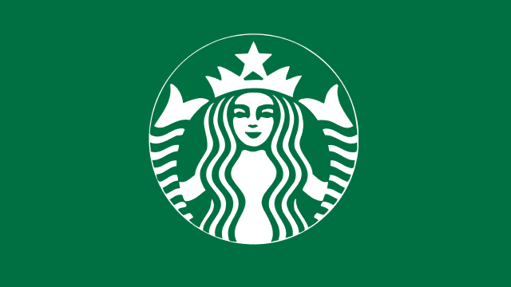

Starbucks Case Study
This case study analyzed Starbucks' financial decline and competitive challenges in 2024, including reduced same-store sales in key markets such as the U.S. and China. The coffee giant faced significant hurdles like economic volatility, changing consumer habits, and intense competition.
To address these challenges, we proposed a multi-faceted strategy:
- Pricing Tiers to attract diverse customers.
- Franchise Expansion to scale cost-effectively.
- Marketing Campaigns with a new slogan to reconnect with customers.
- Menu Customization to meet evolving preferences.
- Cost Optimization to improve efficiency.
These recommendations aimed to help Starbucks reclaim its position as a market leader by aligning its offerings with customer expectations and market demands.
View My Deck